Atividade (TDE) Integrativa
Atividade (TDE) IntegrativaObjetivoProposta de sinal para a atividade integrativaSinais dentro de um sistema FSKSeparando os componentes deste sinalSimulando Sinal
Objetivo
Simular a analisar os sinais presentes num sistema de comunicação de dados baseado em FSK.
A idéia é entender o sinal sendo transmitido e perceber como se pode separar as informações desejadas e como podemos simular este processamento para verificar se conseguimos recuperar a informação desejada.
Esta atividade envolve sintetizar sinais, testar filtros, avaliar a resposta dos filtros, simular o impacto dos filtros sobre o sinal de entrada. Envolve diagramas temporais, espectrais e curvas de resposta de filtro (Diagramas de Bode).
Proposta de sinal para a atividade integrativa
Suponha que se queira transmitir um sinal digital, uma sequência de 0’s e 1’s, apenas variando a frequência usada para transmitir o bit 0 ou o bit 1.
Quando se faz necessário transmitir o sinal ‘0’, se gera uma senóide na frequência
Quando se faz necessário transmitir o sinal ‘1’, se gera uma senóide na frequência
Isso permite simular uma situação de transmissão de informação por portadora senoidal.
Podemos ainda acrescentar (simular) o ruído da rede elétrica e eventualmente até um ruído aleatório. Considere que as amplitudes dos ruídos são inferiores às amplitudes dos sinais que se quer transmitir.
As senóides serão simuladas com amplitude de 1,0 Volt de pico. A senóide com aplitude (algo exagerada) de 0,3 Volts de pico e o ruído (aleatório) com pico de 0,1 Volts. A idéia é simular estes sinais sem nenhuma defasagem presente.
Sinais dentro de um sistema FSK
Num sistema típico FSK de transmissão de dados digitais, a ideia é transmitir bits ‘0’ e ‘1’ variando a frequência dos mesmos.
No caso do exemplo anterior, poderíamos ter feito:
- O bit ‘0’ é representado por uma senóide oscilando em 1 KHz; apenas 1 ciclo por bit.
- O bit ‘1’ é representado pela senóide oscilando em 2,5 KHz; apenas 1 ciclo por bit.
Este sistema permitiria (em teoria), taxas de transmissão de:
- maior período de tempo
- maior período de tempo
Se não existe senóide alguma (sinal oscilante), significa que a linha está “morta” (sem conexão física).
Normalmente sistemas de comunicação transmitem ao menos 1 “smart-bit”, para indicar início da transmissão de dados, depois uma sequência de 7 ou 8-bits, eventualmente mais um “bit de paridade par” (ou “paridade ímpar”), e eventualmente um último bit, o “stop-bit”.
Vamos simplicar as coisas nesta proposta e imaginar que nosso sistema hipotético vai usar 1 start-bit + 8-bits de dados, sem bit de paridade, nem “stop-bit”.
Suponha que vamos transmitir o bit equivalente ao caracter “r”. Na tabela ASCII ele corresponde ao número decimal 114 ou 0x72 (em hexadecimal). Então nosso sistema estaria transmitindo a seguinte sequência de bits: 101110010 (9-bits).
Temporalmente seria gerado um sinal como:
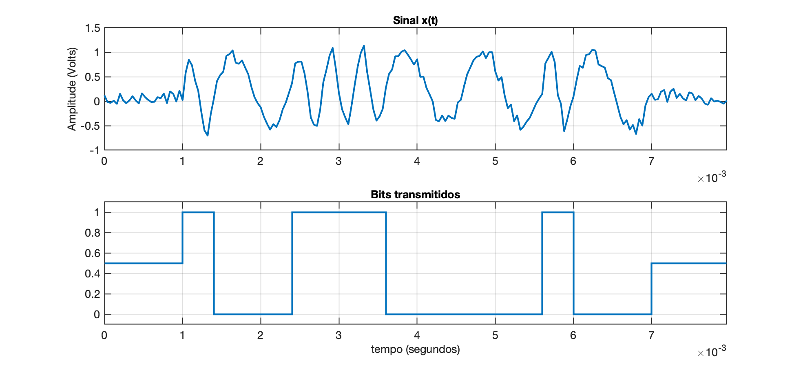
Obs: foi acrescentada uma “pausa” inicial e final de 1 mili-segundo no sinal, totalizando então um período de tempo de aproximadamente:
Excentuando os períodos de pausa, em teoria se poderia transmitar, no “pior” caso, a uma taxa de 119,05 bps. Note que para transmitir todos os bits
O sinal mostrado na figura acima já está pronto e foi disponibilizado no arquivo [sinal_FSK.mat] ou do arquivo CSV: [sinal_FSK.csv]. Este arquivos estão organizados na forma de uma matriz de 160 linhas 3 colunas, a primeira coluna corresponde ao vetor tempo (em segundos), a segunda coluna corresponde ao sinal e a terceira coluna sinaliza o bit sendo transmitido). Este vetor foi gerado usando taxa de amostragem de 20 KHz.
Separando os componentes deste sinal
Suponha que se queria recuperar a informação digital presente no sinal FSK analógico sendo transmitido.
Se quisermos preservar o sinal de 1 kHz, atenuar o de 2,5 kHz e eliminar a interferência de 60 Hz, um simples passa-baixas (com
Por quê?
- O passa-baixas deixa passar 60 Hz praticamente sem atenuação.
- Ele deixa passar 1 kHz.
- Ele consegue atenuar 2,5 kHz.
Ou seja, precisamos de uma pequena alteração na proposta.
Pode-se usar um filtro passa-faixa com faixa e passageem aproximadamente entre 300 Hz e 1,2 KHz.
Ets filtro teria que ser aproximadamente de 3a-ordem para conseguir separar de forma mais adequada a faixa desejada, algo como:
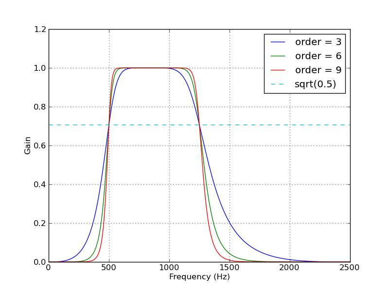
O filtro passa-faixa de 6a-ordem pode ser obtido pelo “calcetamento” em série de 2 filtros de 3a-ordem:
- Primeiro bloco: um filtro passa-alta com frequência de corte de
- Segundo bloco: um filtro passa-baixas com frequência de corte de
O filtro passa-alta com frequência de corte de
Depois, a fim de discriminar o nível lógico do bit sendo transmitido, podemos acrescentar um filtro passa-alta, um filtro passa-baixa com
Em resumo, do ponto de vista do espectro em frequência, estaríamos realizando algo como:
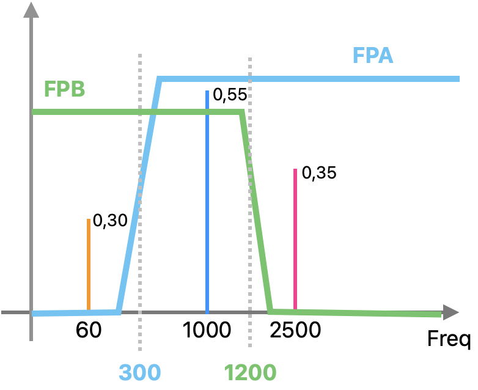
Simulando Sinal
A fim de testar o funcionamento dos filtros, inicialmente vamos gerar um sinal composto da seguinte forma:
Todos os valores de amplitude estão em volts.
Pico máximo limitado a 1,20 V.
Uma implementação inicial o Octave/Matlab poderia ser obtida fazendo-se:
xxxxxxxxxxfs = 20000; % vamos "amostrar" os sinas à taxa de 20 KHz.Ts = 1/fs;t = 0:Ts:0.2-Ts; % simulando até 0,2 segundos
% Sinal compostox = 0.55*sin(2*pi*1000*t) + ... 0.35*sin(2*pi*2500*t) + ... 0.30*sin(2*pi*60*t);O gráfico deste sinal
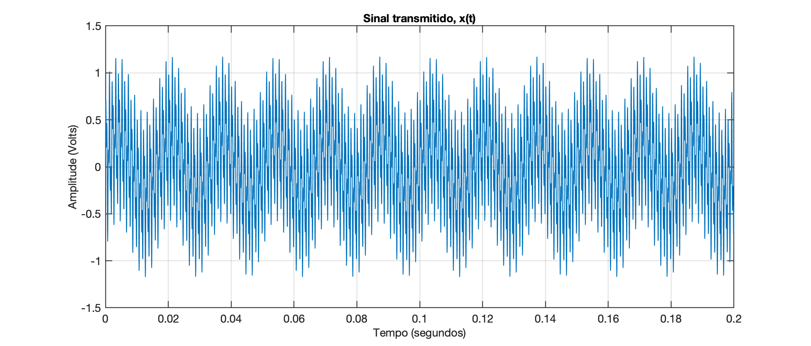
Realizando um “zoom” numa certa região, podemos perceber:
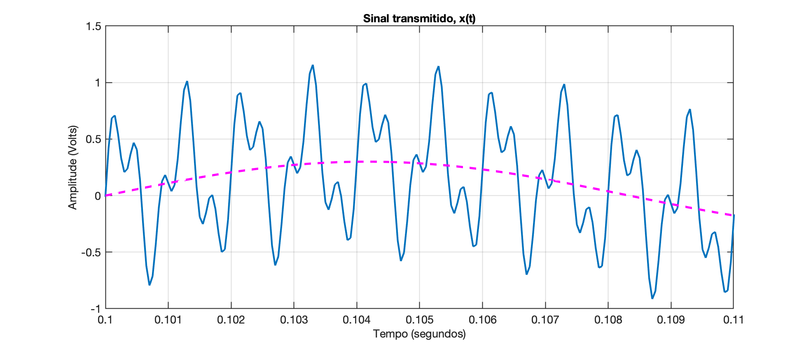
Obs.: A linha tracejada em magenta mostra justamente o ruído em 60 Hz.
Idéia: Como ficaria o sinal acima sem o ruído de 60 Hz? Mostrar o gráfico temporal.
Deve ser obtido algo como:
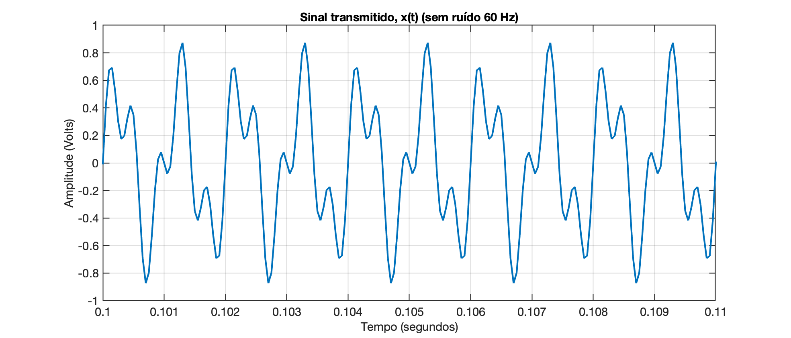
Espectro do Sinal sendo Transmitido
O espectro do sinal
xxxxxxxxxx>> [f, X_mag, X_fase]=espectro(x, fs);> Vetor de entrada x com 4000 pontos> Realizando FFT de N = 4000 pontos> Freq. de Nyquist = 10000 (Hz)> Número de bins válidos (unilateral) = 2001> Freq. Máxima do Espectro = 10000 (Hz) em f(2001)> Resolução frequencial = 5 (Hz)
Magnitude usada como referência = 0.55 (Volts) em f(200)=1000 (Hz)Magnitude usada como limiar <= 0.0006 (mean)Encontradas 3 frequências dominantes| # | Freq | |X(w)| | % | dB | Fase || 200 | 1000.00 | 0.55000 | 100.000 | 0.00 | -28.65 | <-- Valor base (referência)| 500 | 2500.00 | 0.35000 | 63.636 | -3.93 | -28.65 || 12 | 60.00 | 0.30000 | 54.545 | -5.26 | -28.65 |>> 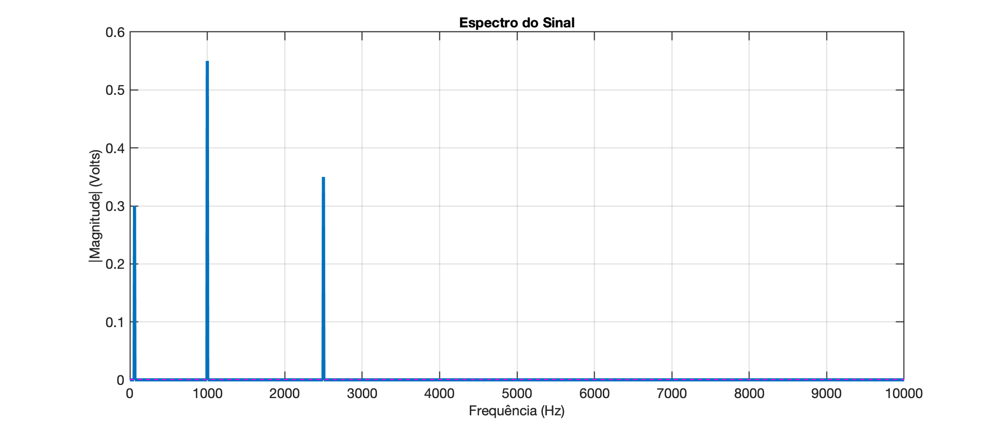
Deve ficar perceptível os componentes nas Amplitudes e frequências corretas.
Filtro Passa Alta
Como mencionado anteriormente, este filtro possui frequência de corte de
A função transferência deste filtro (um Butterworth) de 3a-odem é dada abaixo:
Note que este filtro possui um pólo em
Usando Matlab/Octave:
xxxxxxxxxx> pole(Filtro_Passa_Alta)ans = -1885 + 0i -942.48 + 1632.4i -942.48 - 1632.4iOs parâmetros deste filtro (sua função transferência) podem ser obtidos no Matlab/Octave através de:
xxxxxxxxxx% Filtro passa-altas Butterworth[bh,ah] = butter(3,2*pi*300,'high','s');O Diagrama de Bode deste filtro (resposta frequencial do mesmo) revela o seguinte comportamento:
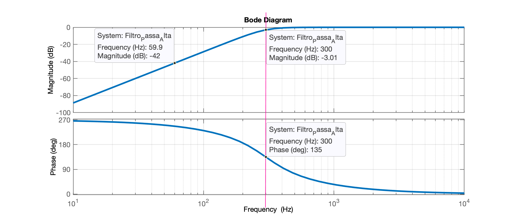
Deve ser observado que o ruído na frequência de 60 Hz vai sofrer uma atenuação de
xxxxxxxxxx>> [freqs' ganho' ganho_dB' fase']ans = 60 0.0079997 -41.938 -113.08 1000 0.99964 -0.0031649 34.945 2500 1 -1.2968e-05 13.785Confirmamos que:
- Este filtro vai atenuar fortemente o ruído em 60 Hz;
Na realidade, a amplitude original de 0,30 vai ser reduzida para: 0,0023999.
Ou a amplitude original do ruído vai ser reduzida para
- Vai deixar passar incolume as outras 2 frequências que compõem o sinal
Como calcular ganhos e defasagens à partir de transfer function
Lembrar que toda função transferência,
ou seja, você necessita descobrir o polinômio do numerador e denominador que compõe a função transferência desejada, e no lugar de
Note que o Octave/Matlab, já possui as funções:
abs(arg): calcula a magnitura de um número (real ou complexto). Seargfor um número complexo do tipo:angle(arg): calcular o ângulo (defasagem) dearg. Seargfor um número complexo do tipo:Obs.: o ângulo é retornado em radianos.
polyval(p, x): avalia (substitui) o(s) valor(es)xno polinômiop. Por exemplo: Suponha que se queria calular o valor dexxxxxxxxxxp = [3 2 1];x = [5];y = polyval(p, x)% Resultado; y = 86
Resumindo
Podemos calular o ganho em determina frequência fazendo algo como:
xxxxxxxxxx% Extrair coeficientes (ordem decrescente de potências)[num, den] = tfdata(G, 'v');
% Frequência em rad/sw = 10;
% Avaliar N(jω) e D(jω)num_jw = polyval(num, 1i*w); % note "1i" = j1 = nuúmero imaginárioden_jw = polyval(den, 1i*w);
% GanhoH = num_jw ./ den_jw;ganho = abs(H);fase = angle(H); % em radianosVoltando ao trabalho…
A ideia é avaliar tanto no domínio tempo (diagrama temporal) quanto no domínio frequência, o impacto gerado pelos filtros.
Avaliando Resposta Temporal do Filtro
Suponha que se deseja saber como fica o sinal
Isto é possível usando a função lsim() usada no semestre passado na disciplina Introdução à Sistemas Lineares > Modelagem/Análise de circuito RC > Simulando Circuito RC com senóide.
Realizamos algo como:
xxxxxxxxxxy_fpa = lsim(Filtro_Passa_Alta, x, t);A figura abaixo compara o sinal de entrada
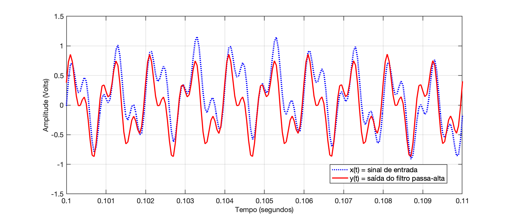
Deve ser confirmad que o ruído em 60 Hz desapareceu. Isto era desejado e intensional. Antes de trabalhar sobre os componentes esperados do sinal, temos que filtrar/eliminar o ruído.
Espectro do sinal depois do filtro
O espectro deste sinal
xxxxxxxxxx>> [f_fpa, Y_fpa_mag, Y_fpa_fase]=espectro(y_fpa, fs);> Vetor de entrada x com 4000 pontos> Realizando FFT de N = 4000 pontos> Freq. de Nyquist = 10000 (Hz)> Número de bins válidos (unilateral) = 2001> Freq. Máxima do Espectro = 10000 (Hz) em f(2001)> Resolução frequencial = 5 (Hz)
Magnitude usada como referência = 0.548338 (Volts) em f(200)=1000 (Hz)Magnitude usada como limiar <= 0.00072206 (mean)Encontradas 181 frequências dominantesSerão mostradas apenas as 20 maiores contribuições| # | Freq | |X(w)| | % | dB | Fase || 200 | 1000.00 | 0.54834 | 100.000 | 0.00 | -17.61 | <-- Valor base (referência)| 500 | 2500.00 | 0.34922 | 63.688 | -3.92 | -24.49 || 12 | 60.00 | 0.00332 | 0.605 | -44.36 | 52.02 || 66 | 330.00 | 0.00155 | 0.282 | -50.98 | 52.26 || 65 | 325.00 | 0.00155 | 0.282 | -50.98 | 52.63 || 67 | 335.00 | 0.00155 | 0.282 | -50.99 | 51.91 || 64 | 320.00 | 0.00155 | 0.282 | -50.99 | 52.99 || 68 | 340.00 | 0.00155 | 0.282 | -51.00 | 51.55 || 63 | 315.00 | 0.00154 | 0.282 | -51.01 | 53.36 || 69 | 345.00 | 0.00154 | 0.281 | -51.02 | 51.21 || 62 | 310.00 | 0.00154 | 0.281 | -51.03 | 53.73 |Ou graficamente:
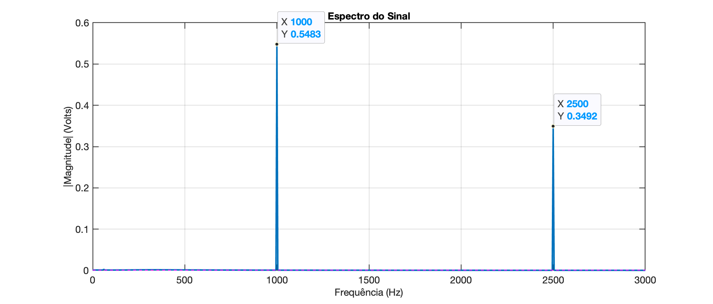
Deve ser percebIdo que o ruído em 60 Hz foi eliminado. Nâo existe mais nenhum “pico” em 60 Hz.
Filtro Passa-Baixas
Fou previsto outro filtro Butterworth de 3a-ordem, passa-baixas, com frequência de corte em
Note que temos um dos pólos na frequência de 1200 Hz:
xxxxxxxxxx>> 2*pi*1200 % freq. em rad/sans = 7539.8>> pole(Filtro_Passa_Baixa)ans = -7539.8 + 0i -3769.9 + 6529.7i -3769.9 - 6529.7iSeu diagrama de Bode rende:
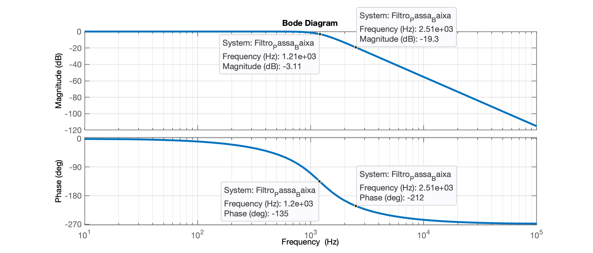
Confirmamos que ele vai filtrar sinais acima dos 1200 Hz. A idéia é “eliminar”/rejeitar o sinal oscilando à 2,5 KHz.
Ou seja, a senóide oscilando em 2500 Hz, seria “rejeitada” (filtrada). O ganho deste filtro nesta frequência é de
Notar que um “ganho” de
Calculando exatamente os ganhos e defasagens deve ser obtido algo como:
xxxxxxxxxx>> [freqs2' ganho2' ganho_dB2' fase2']ans = 1000 0.86552 -1.2545 -109.67 2500 0.10992 -19.178 147.59Seguem os resultados temporal e espectral do sinal após passagem pelos filtros.
Resultado Temporal
O sinal
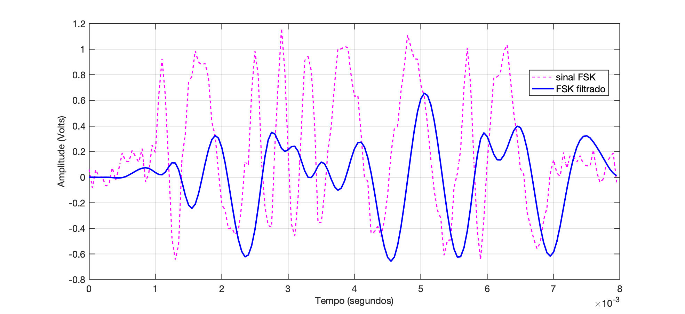
Resultado Espectral
O diagrama espectral deve gerar algo como:
xxxxxxxxxx>> [f_final, Y_final_mag, Y_final_fase]=espectro(y_final, fs);> Vetor de entrada x com 4000 pontos> Realizando FFT de N = 4000 pontos> Freq. de Nyquist = 10000 (Hz)> Número de bins válidos (unilateral) = 2001> Freq. Máxima do Espectro = 10000 (Hz) em f(2001)> Resolução frequencial = 5 (Hz)
Magnitude usada como referência = 0.470128 (Volts) em f(200)=1000 (Hz)Magnitude usada como limiar <= 0.000593067 (mean)Encontradas 322 frequências dominantesSerão mostradas apenas as 20 maiores contribuições| # | Freq | |X(w)| | % | dB | Fase || 200 | 1000.00 | 0.47013 | 100.000 | 0.00 | -52.49 | <-- Valor base (referência)| 500 | 2500.00 | 0.03621 | 7.701 | -22.27 | 22.38 || 12 | 60.00 | 0.00244 | 0.520 | -45.69 | 47.65 || 153 | 765.00 | 0.00150 | 0.320 | -49.89 | 1.48 || 154 | 770.00 | 0.00150 | 0.320 | -49.89 | 1.28 || 152 | 760.00 | 0.00150 | 0.320 | -49.89 | 1.67 || 155 | 775.00 | 0.00150 | 0.320 | -49.90 | 1.08 || 151 | 755.00 | 0.00150 | 0.320 | -49.90 | 1.87 || 156 | 780.00 | 0.00150 | 0.320 | -49.90 | 0.89 || 150 | 750.00 | 0.00150 | 0.320 | -49.90 | 2.07 || 157 | 785.00 | 0.00150 | 0.320 | -49.90 | 0.70 |Ou seja, percebemos que se houver um componente oscilando em 2,5 KHz, sua amplitude será reduzida para 7,7% do que era originalmente (uma queda em aplitude de 22,27 dB).
Graficamente o espectro fica:
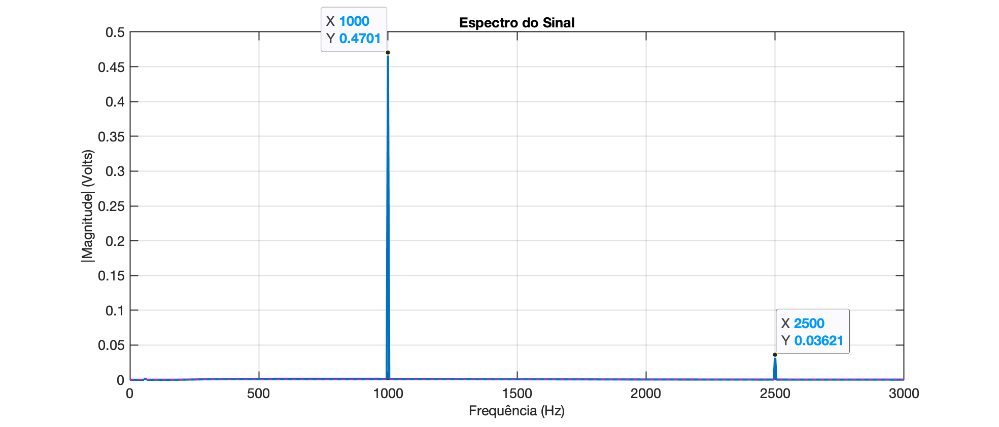
Obs.: o gráfico anterior foi limitado à faixa 0 <
Percebe-se pelo gráfico anterior, que praticamente isolamos o componte oscilando em 1 KHz.
Simulando Passagem do Sinal Amostra pelos 2 Filtros
Se o sinal
Passar pelos 2 filtros propostos, deve ser obtido algo como:
Ou sobrepondo-se aos bits que se deseja recuperar:
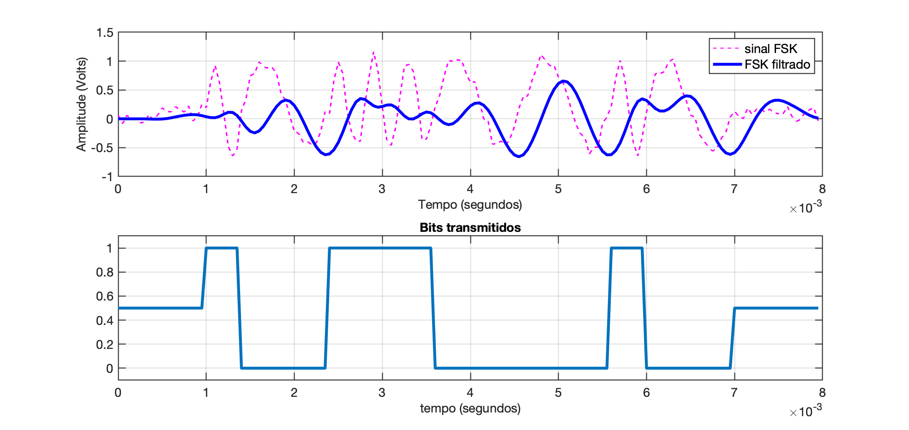
Espectro dos Sinais Envolvidos
O sinal FSK (amosta de
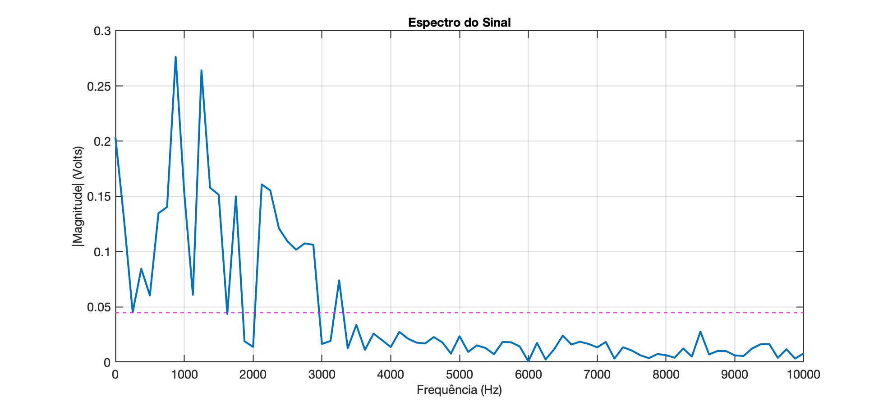
Aparentemente o sinal foi bastante contaminado por ruído. Note que a resolução espectral da FFT realizada, foi baixa (resolução de 125 Hz, com base nos apenas 160 pontos passados como entrada).
Um “zoom” na faixa de
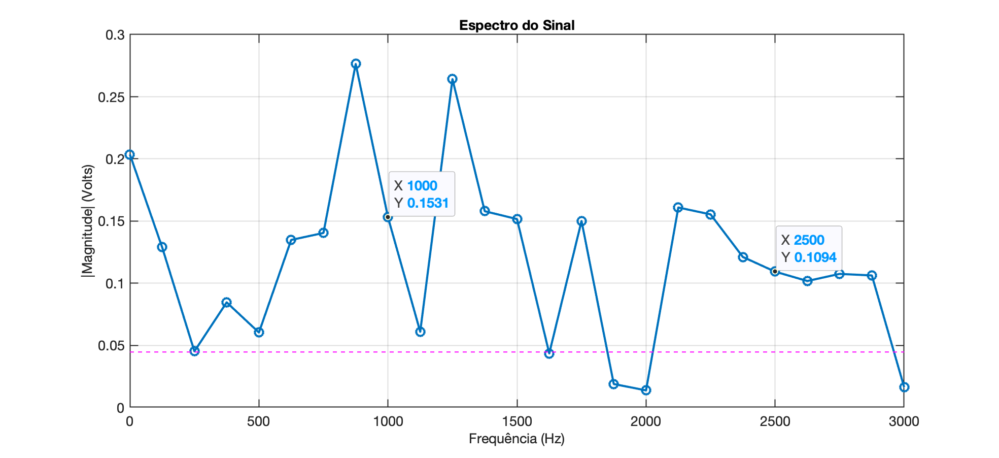
Ou seja, os sinais em 1 KHz e 2,5 KHz não se ressaltam por sobre o ruído.
Dados do espectro:
xxxxxxxxxx>> [f_FSK,Y_FSK_mag,Y_FSK_fase]=espectro(y_sinal, fs);> Vetor de entrada x com 160 pontos> Realizando FFT de N = 160 pontos> Freq. de Nyquist = 10000 (Hz)> Número de bins válidos (unilateral) = 81> Freq. Máxima do Espectro = 10000 (Hz) em f(81)> Resolução frequencial = 125 (Hz)
Magnitude usada como referência = 0.276334 (Volts) em f(7)=875 (Hz)Magnitude usada como limiar <= 0.0447944 (mean)Encontradas 22 frequências dominantesSerão mostradas apenas as 20 maiores contribuições| # | Freq | |X(w)| | % | dB | Fase || 7 | 875.00 | 0.27633 | 100.000 | 0.00 | -42.92 | <-- Valor base (referência)| 10 | 1250.00 | 0.26414 | 95.589 | -0.39 | -1.85 || 0 | 0.00 | 0.20360 | 73.679 | -2.65 | 0.00 | <-- Nível DC do sinal| 17 | 2125.00 | 0.16096 | 58.247 | -4.69 | -15.89 || 11 | 1375.00 | 0.15798 | 57.168 | -4.86 | 54.74 || 18 | 2250.00 | 0.15543 | 56.245 | -5.00 | 52.49 || 8 | 1000.00 | 0.15311 | 55.407 | -5.13 | 21.03 || 12 | 1500.00 | 0.15166 | 54.882 | -5.21 | 51.71 || 14 | 1750.00 | 0.15013 | 54.328 | -5.30 | 10.14 || 6 | 750.00 | 0.14049 | 50.841 | -5.88 | 38.39 || 5 | 625.00 | 0.13489 | 48.814 | -6.23 | 6.27 || 1 | 125.00 | 0.12899 | 46.681 | -6.62 | -52.29 || 19 | 2375.00 | 0.12121 | 43.865 | -7.16 | 28.57 || 20 | 2500.00 | 0.10939 | 39.587 | -8.05 | -29.07 || 22 | 2750.00 | 0.10759 | 38.934 | -8.19 | 1.56 || 23 | 2875.00 | 0.10634 | 38.482 | -8.29 | -37.96 || 21 | 2625.00 | 0.10186 | 36.863 | -8.67 | 30.17 || 3 | 375.00 | 0.08470 | 30.652 | -10.27 | -45.72 || 26 | 3250.00 | 0.07412 | 26.824 | -11.43 | 47.23 || 9 | 1125.00 | 0.06106 | 22.097 | -13.11 | -26.00 |Já o espectro sobre o sinal filtrado, depois de passar pelos 2 filtros resultou:
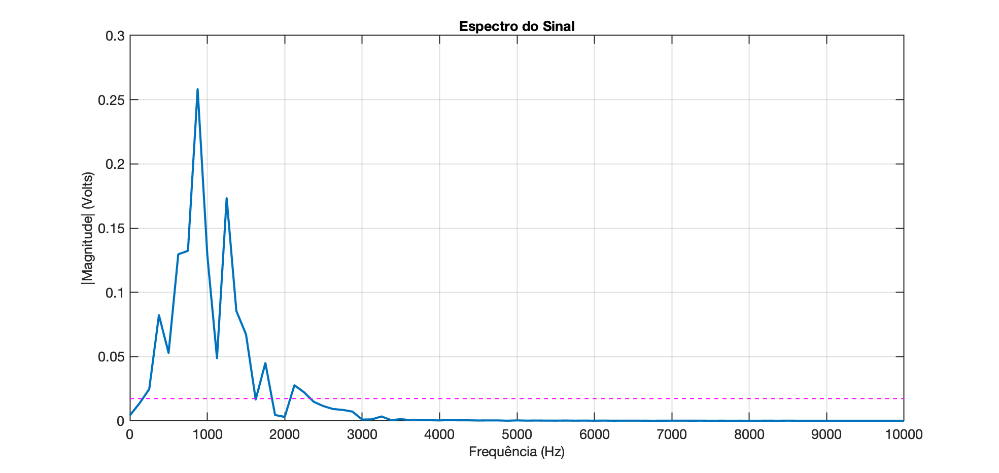
Um “zoom” na faixa de freq = [0, 3000] Hz, mostra:
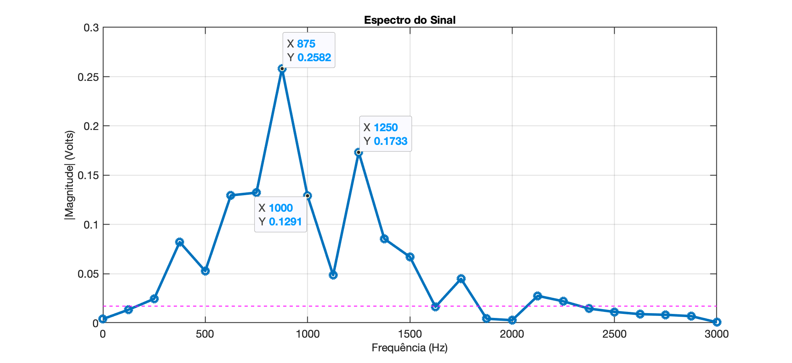
Dados do espectro do sinal filtrado:
xxxxxxxxxx>> [fs_aux,FSK_filtrado_mag,FSK_filtrado_fase]=espectro(FSK_filtrado, fs);> Vetor de entrada x com 160 pontos> Realizando FFT de N = 160 pontos> Freq. de Nyquist = 10000 (Hz)> Número de bins válidos (unilateral) = 81> Freq. Máxima do Espectro = 10000 (Hz) em f(81)> Resolução frequencial = 125 (Hz)
Magnitude usada como referência = 0.258229 (Volts) em f(7)=875 (Hz)Magnitude usada como limiar <= 0.0172665 (mean)Encontradas 14 frequências dominantes| # | Freq | |X(w)| | % | dB | Fase || 7 | 875.00 | 0.25823 | 100.000 | 0.00 | 54.89 | <-- Valor base (referência)| 10 | 1250.00 | 0.17333 | 67.122 | -3.46 | -37.99 || 6 | 750.00 | 0.13236 | 51.257 | -5.80 | 29.04 || 5 | 625.00 | 0.12963 | 50.199 | -5.99 | 3.95 || 8 | 1000.00 | 0.12905 | 49.976 | -6.02 | -2.93 || 11 | 1375.00 | 0.08556 | 33.132 | -9.60 | 13.91 || 3 | 375.00 | 0.08222 | 31.842 | -9.94 | -23.81 || 12 | 1500.00 | 0.06727 | 26.049 | -11.68 | 6.52 || 4 | 500.00 | 0.05283 | 20.460 | -13.78 | 30.07 || 9 | 1125.00 | 0.04869 | 18.855 | -14.49 | -56.17 || 14 | 1750.00 | 0.04499 | 17.421 | -15.18 | -42.10 || 17 | 2125.00 | 0.02769 | 10.721 | -19.40 | 39.99 || 2 | 250.00 | 0.02469 | 9.561 | -20.39 | 7.78 || 18 | 2250.00 | 0.02217 | 8.586 | -21.32 | -7.96 |
Esperado neste Trabalho
Simular outro sinal “transmitido”
Algumas considerações:
- Considere que a amplitude para a senóide de 1 KHz e a de 2,5 KHz, será de 1,0 Volt de pico.
- Considere o sinal corrompido ("ruído") pela rede oscilando em 60 Hz, mas com amplitude máxima de 0,15 Volt.
- Acrescente ruído aleatório mas com amplitude máxima de 0,05 Volts.
- Note que neste caso, as senóides de 1 KHz e 2,5 KHz não se misturam mais.
- Considere (ou não o “start” bit).
- Considere que este dado vai ser repetidamente transmitido umas
Calcule o número
Um documento final deve ser criado, retratanto como, no domínio tempo e no domínio frequência, o sinal trasmitido é afetado por cada etapa de processamento:
O código usado para obter os resultados numéricos e gráficos deve ser acrescentado como "Apêndice" na parte final do documento e deve conter comentários mínimos, mas relevantes, pssando uma idéia do que está sendo realizado ou justificando certas formas de cálculo.
Você consegue propor outra sequência de filtros para tentar recuperar corretamente os bits '0' e '1'? Explique, incluindo um esboço do domínio frequência (espectro) da sua ideia. Não é necessário simular sua proposta.
Anexos
Diagramas de Bode em Hz
O Matlab permite levantar o diagrama de magnitude e de fase de uma função transferência, variando automaticamente o vetor bode() faça:
xxxxxxxxxxfigure; handler=bodeplot(filtro);setoptions(handler,'FreqUnits','Hz')gridA função bodeplot() não existe no Octave. No Octave seré necessário um processamento extra:
xxxxxxxxxxpkg load control
[mag, pha, w] = bode(filtro);% retorna dados em mag (magnitude), pha (fase em rad), w (freq em rad/s)
% Convertendo frequência para Hzf_hz = w / (2 * pi);
% Convertendo magnitude para dB (opcional, mas recomendado para Bode)mag_db = 20 * log10(squeeze(mag));
% Convertendo fase de radianos para grauspha_deg = rad2deg(squeeze(pha));
% Plotandofigure;
subplot(2,1,1);semilogx(f_hz, mag_db, 'b');grid on;ylabel('Magnitude [dB]');title('Diagrama de Bode (Hz)');
subplot(2,1,2);semilogx(f_hz, pha_deg, 'r');grid on;xlabel('Frequência [Hz]');ylabel('Fase [graus]');Gerando Números aleatórios
Com o objeivo de simular ruído de forma aleatória, podemos usar a função rand().
Exemplo: Gerando vetor
xxxxxxxxxxn = a + (b-a).*rand(100,1);
Fernando Passold, em 24/11/2026